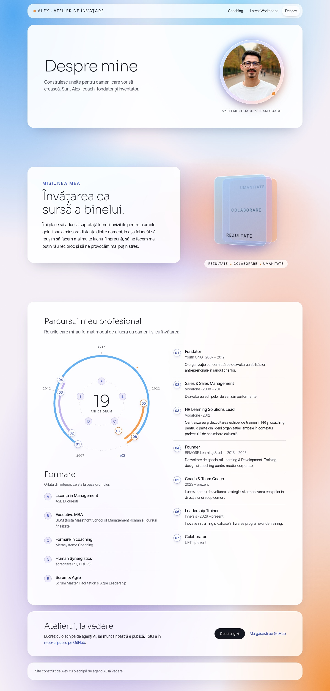
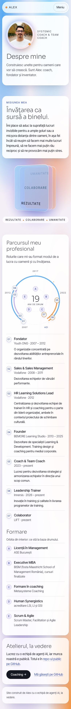
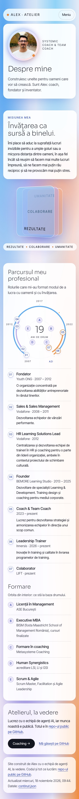
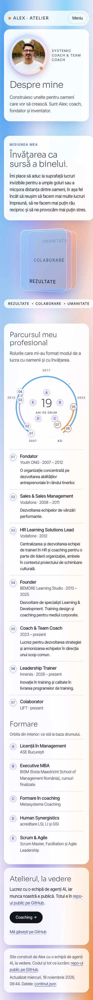
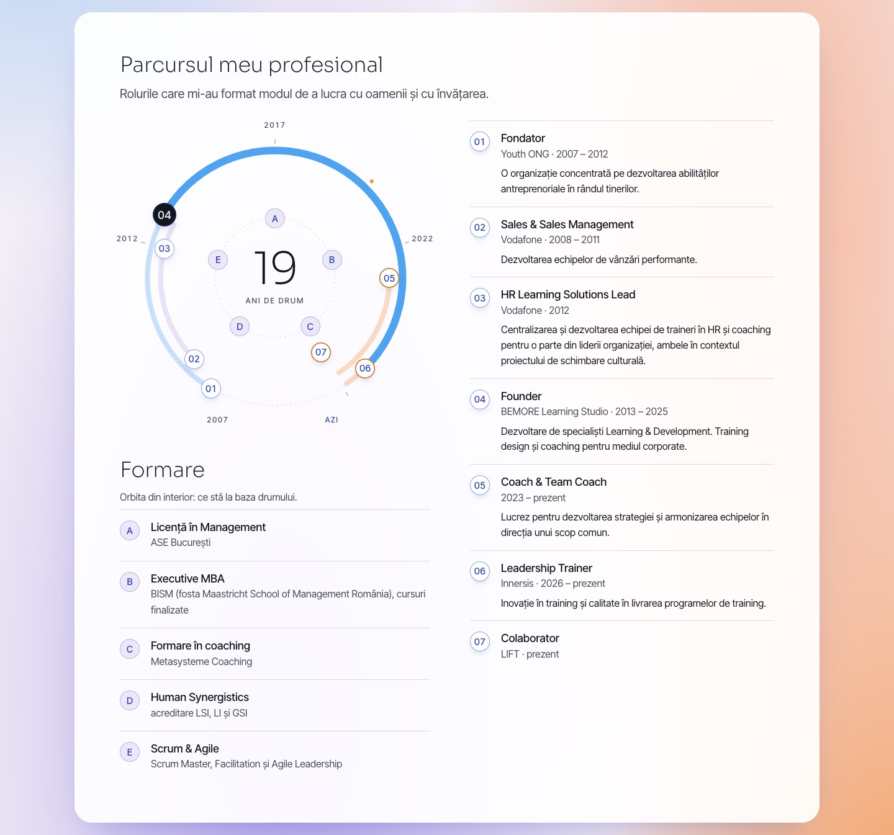
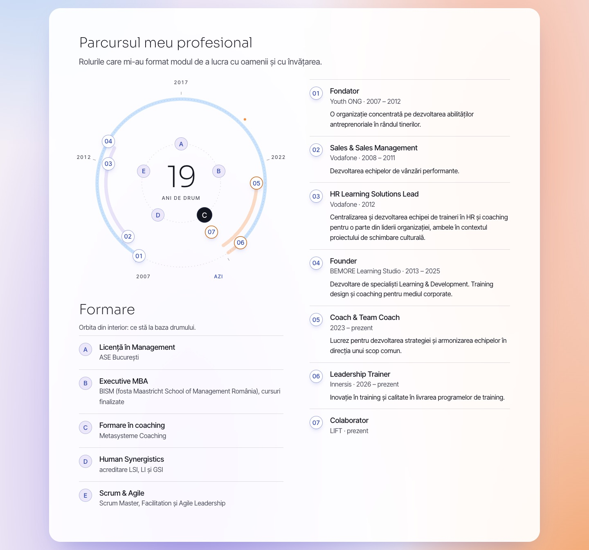
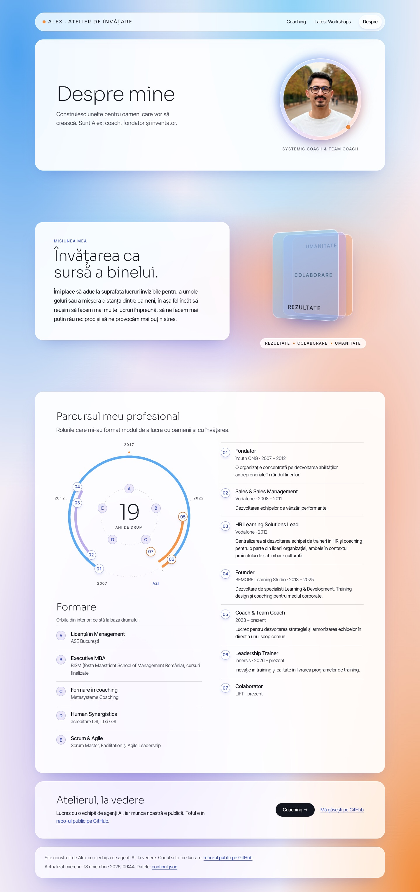
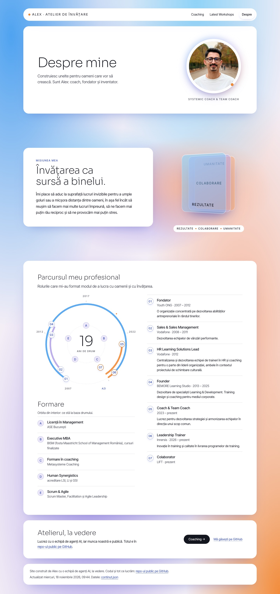
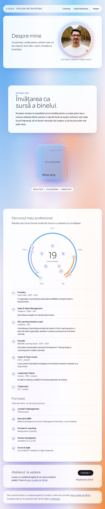

Stânga: varianta „A · Orbita drumului” din team/ioana/documente/despre-compozitie-v1.html (D-063). Dreapta: site-ul local (site/dist), din build. Capturi din Chrome headless, pagina întreagă, cu animațiile oprite în același moment. Nimic nu e publicat încă.
Desktop · 1440 px
Mostra

Site
Telefon · 390 px
Mostra

Site

Site · 375 px, fără derulare laterală

Hover pe un rând (CSS :has, fără JavaScript)
Rolul 04, Founder: arcul se îngroașă, discul se umple, restul arcelor se sting

Formarea C: litera de pe orbita din interior se aprinde

Fără mișcare, fără JavaScript, fără transparență
prefers-reduced-motion: pachetul stă la −24°, lumina orbitei stă pe loc, butonul e inactiv

Fără JavaScript: orbita e întreagă (desenată la build), pachetul stă la −24°prefers-reduced-transparency: sticla devine plină

900 px (între telefon și desktop): misiunea și orbita trec pe o coloană

Unde diferă site-ul de mostră și de ce
Granulația e mai fină pe tot site-ul. În mostră, granulația stă peste toată pagina, inclusiv peste panouri. Pe site stă sub sticlă, ca până acum. Peste lumina misiunii am pus același strat, decupat cu forma luminii, ca să nu apară pată netedă. Măsurat: zgomotul în lumină e 0,62, pe fondul simplu 0,28.
Marginile laterale pe telefon au 16 px, ca bara de sus a site-ului; în mostră sunt 12 px. Pagina iese cu circa 90 px mai lungă.
Subsolul e cel al site-ului (două rânduri, cu data actualizării), lățit la 1200 px doar pe Despre.
Butonul pachetului își păstrează eticheta („Oprește rotirea cărților”), iar starea o spune aria-pressed. Mostra schimba și eticheta, ceea ce cititorul de ecran anunța de două ori.
Fără JavaScript sau cu mișcarea redusă, pachetul nu se rotește deloc și butonul e inactiv. Altfel ar fi existat mișcare fără buton de pauză.
Între 761 și 1099 px (mostra nu acoperă lățimea asta): misiunea și cărțile, apoi cadranul și lista, stau pe o singură coloană.
„Azi” se calculează la build (acum 2026,88; mostra avea 2026,9), la fel ca numărul din centru. De la 2027, centrul arată „20 de ani de drum”.